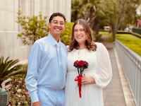

Elias Martins | WDD 130

My name is Elias Martins, I am born in Bagé, Rio Grande do Sul, in Brazil. I currently live in Jaraguá do Sul, with my wife and, in two weeks, we complete 4 months married. I love learning and coding. Actually, I spend a few time on the technical part opf IT, working as a teachers for kids and teenagers. Once I moved to Jaraguá do Sul, I started working on Delly's, a Food Service distributor. There I remembered my passion for coding and decided to start working on it. I also love spending time with my wife and our families, I always learn a lot when we are with my or her parents.